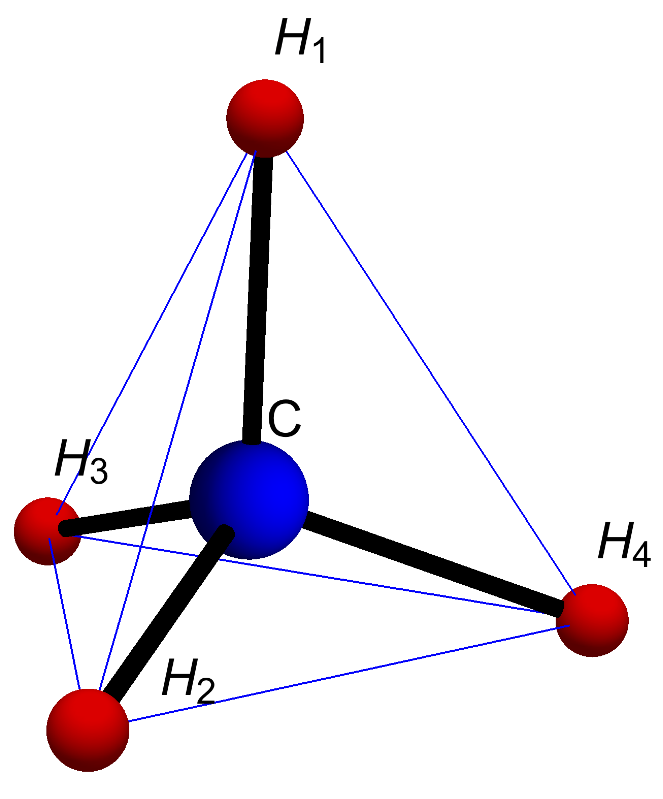
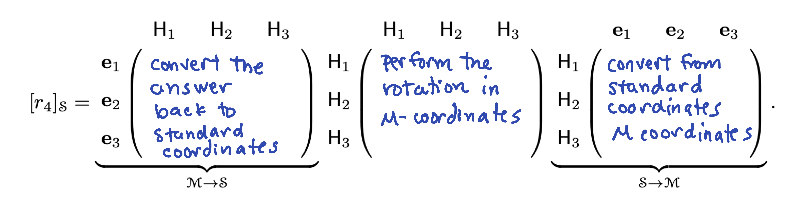
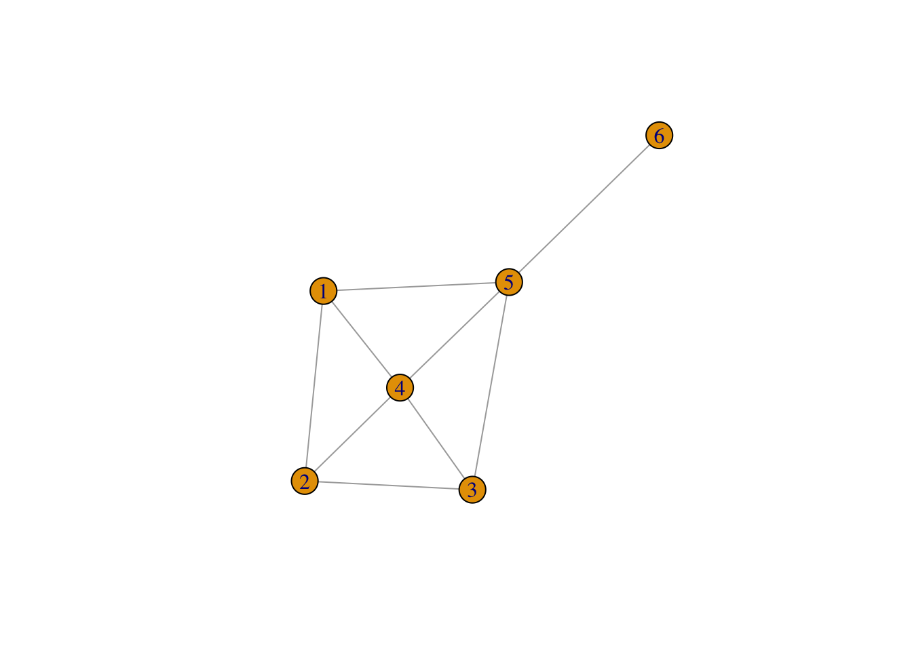

Section 5 Problem Set 5
- Due: Tuesday June 22 by 11:59pm CST.
- Upload your solutions to Moodle in a PDF.
- Please feel free to use RStudio for all row reductions.
- You can download the Rmd source file for this problem set.
The Problem Set covers sections 4.4, 4.5, 3.1, homogeneous coordinates
5.1 A Tale of Two Bases
I recommend using R on this problem. Consider the subspace \(S\) of \(\mathbb{R}^5\) below. \[ S = \textsf{span}\left( \begin{bmatrix} 1 \\ 1 \\ 1 \\ 1 \\ 2 \\ \end{bmatrix}, \begin{bmatrix} 1 \\ 2 \\ 3 \\ 0 \\ -1 \\ \end{bmatrix}, \begin{bmatrix} 0 \\ 0 \\ 0 \\ 1 \\ 2 \\ \end{bmatrix}, \begin{bmatrix} -1 \\ 1 \\ 3 \\ 0 \\ -2 \\ \end{bmatrix}, \begin{bmatrix} 2 \\ 1 \\ 0 \\ 1 \\ 3 \\ \end{bmatrix} \right) \]
A = cbind(c(1,1,1,1,2),c(1, 2, 3, 0, -1),c(0, 0, 0, 1, 2), c(-1, 1, 3, 0, -2),c(2, 1, 0, 1, 3))Give a basis of \(S\) consisting of some or all of the vectors used to define \(S\) above.
Give a basis of \(S\) that has the nice standard basis property (i.e., the 0s and 1s property).
For the two vectors below, decide if they are in \(S\). If the vector is in \(S\) then give its coordinates in each of your bases from parts (a) and (b). If you can do one of these “by hand” then explain how. \[ \mathbf{w} = \begin{bmatrix} 8 \\ 11 \\ 14 \\ 7 \\ 11 \end{bmatrix}, \qquad \mathbf{v} = \begin{bmatrix} 3 \\ 3 \\ 3 \\ 1 \\ 1 \end{bmatrix}. \]
5.2 Dimension
Find the dimension of the subspace \(Z\) of \(\mathbb{R}^5\) of vectors below \[ Z = \left\{ \begin{bmatrix}x_1 \\ x_2 \\ x_3 \\ x_4 \\ x_5 \end{bmatrix} \ \Bigg\vert\ \ x_1 + x_2 + x_3 + x_4 + x_5 = 0, x_4 = 2 x_2 \ \right\}. \]
5.3 Determinant Properties
Turn in an R-markdown file with your solution to this problem. You can compute determinants in R using the det command. Here you will explore some properties of determinants.
(A = rbind(c(3, 0, -1, 1, 2), c(1, 1, -1, 1, 1), c(-2, -3, -2, 3, 1), c(1, 3, 1, 3, 0),
c(1, 3, 0, -2, 0)))## [,1] [,2] [,3] [,4] [,5]
## [1,] 3 0 -1 1 2
## [2,] 1 1 -1 1 1
## [3,] -2 -3 -2 3 1
## [4,] 1 3 1 3 0
## [5,] 1 3 0 -2 0- Compute the determinant of \(A\).
- Compute the determinant of \(A^2\). How does it compare to \(det(A)\)?
- Compute the determinant of \(A^{-1}\). How does it compare to \(det(A)\)?
- Swap two rows of \(A\) and then compute the determinant of the matrix that you get.
- Multiply the 4th row of the original matrix \(A\) by 7 and then compute the determinant of the matrix you get. How does it compare to \(det(A)\)?
- Compute the determinant of \(7A\). How does it compare to \(det(A)\)?
- Let \(B\) be the matrix below, and compute \(det(B)\), \(det(A B)\), and \(det(A) det(B)\).
(B = rbind(c(1, 2,1, 1, 1), c(1, 2, 0, 1, -1), c(-2, -1, -2,0, 1), c(1, 0, 1, 3, 0),
c(1, 0, 0, 1,1)))## [,1] [,2] [,3] [,4] [,5]
## [1,] 1 2 1 1 1
## [2,] 1 2 0 1 -1
## [3,] -2 -1 -2 0 1
## [4,] 1 0 1 3 0
## [5,] 1 0 0 1 15.4 Matrix Rank
Fill in the entries of the table with T = true or F = false or I = not enough information to know. (Hint: draw a “picture” of the RREF of \(\mathsf{A}\) in each case).
(a) \(\mathsf{A}\) is invertible
(b) \(\mathsf{rref}(\mathsf{A}) = I\)
(c) \(\mathsf{A}\) has 8 pivots
(d) \(\mathsf{A} \mathbf{0} = \mathbf{0}\)
(e) \(\mathsf{A} \mathsf{x} = \mathbf{0}\) has more than one solution.
(f) \(T\) is one-to-one
(g) \(T\) is onto
(h) \(\mathsf{A} \mathsf{x} = \mathsf{b}\) has at least one solution for all \(\mathsf{b} \in \mathbb{R}^8\).
(i) The columns of \(\mathsf{A}\) span \(\mathbb{R}^8\).
(j) There is a vector \(\mathsf{b} \in \mathbb{R}^8\) such that \(\mathsf{A} \mathsf{x} = \mathsf{b}\) has no solutions.
(k) There is a vector \(\mathsf{b} \in \mathbb{R}^8\) such that \(\mathsf{A} \mathsf{x} = \mathsf{b}\) has infinitely many solutions.
(l) There is a vector \(\mathsf{b} \in \mathbb{R}^8\) such that \(\mathsf{A} \mathsf{x} = \mathsf{b}\) has exactly 17 solutions.
(m) There is a vector \(b \in \mathbb{R}^8\) that can be written as a linear combination of the columns of \(\mathsf{A}\) in more than one way.
(n) The rows of \(\mathsf{A}\) span a 7 dimensional subspace of \(\mathbb{R}^8\).
(o) The columns of \(\mathsf{A}\) are linearly independent.
(p) The rows of \(\mathsf{A}\) are linearly independent
\[ \begin{array}{|c|c|c|c|c|} \hline & T: \mathbb{R}^8 \to \mathbb{R}^8 & T: \mathbb{R}^8 \to \mathbb{R}^8 & T: \mathbb{R}^7 \to \mathbb{R}^8 & T: \mathbb{R}^9 \to \mathbb{R}^8 \\ & \text{$\mathsf{A}$ has rank 7} & \text{$\mathsf{A}$ has rank 8} & \text{$\mathsf{A}$ has rank 7} & \text{$\mathsf{A}$ has rank 8} \\ \hline (a) & & & & \\ \hline (b) & & & & \\ \hline (c) & & & & \\ \hline (d) & & & & \\ \hline (e) & & & & \\ \hline (f) & & & & \\ \hline (g) & & & & \\ \hline (h) & & & & \\ \hline (i) & & & & \\ \hline (j) & & & & \\ \hline (k) & & & & \\ \hline (l) & & & & \\ \hline (m) & & & & \\ \hline (n) & & & & \\ \hline (o) & & & & \\ \hline (p) & & & & \\ \hline \end{array} \]
5.5 A Tetrahedral Basis
In practice, we change bases because problems are computationally easier in another coordinate system or because we learn something by looking at a problem from the point of view of a different coordinate system. The following example illustrates this with ideas that arises both in chemistry and computer graphics. Below is the tetrahedral molecule methane, \(\mathsf{CH}_4\). Its coordinates can be described in 3-dimensional space by the vectors below.
\[ \mathsf{C}=\begin{bmatrix} 0 \\ 0 \\ 0 \end{bmatrix}, \mathsf{H}_1=\begin{bmatrix} 0 \\ 0 \\ \frac{3}{2\sqrt{6}} \end{bmatrix}, \mathsf{H}_2=\begin{bmatrix} -\frac{1}{2 \sqrt{3}} \\ -\frac{1}{2} \\ -\frac{1}{2 \sqrt{6}} \end{bmatrix}, \mathsf{H}_3=\begin{bmatrix} -\frac{1}{2 \sqrt{3}} \\ \frac{1}{2} \\ -\frac{1}{2 \sqrt{6}} \end{bmatrix}, \mathsf{H}_4=\begin{bmatrix} \frac{1}{\sqrt{3}} \\0 \\-\frac{1}{2 \sqrt{6}} \end{bmatrix} \]

Let \(\mathcal{M} = \{ \mathsf{H}_1, \mathsf{H}_2, \mathsf{H_3} \}\). Then \(\mathcal{M}\) is a basis of \(\mathbb{R}^3\), which we will call the tetrahedral basis. You can see from the plot that these vectors are linearly independent (not all on the same plane)
Express \(\mathsf{H}_4\) in the tetrahedral basis. Hint: first compute \(\mathsf{H}_1+\mathsf{H}_2+\mathsf{H}_3+\mathsf{H}_4\) using the coordinates above. You do not need to do any row reductions for this question.
Give the change of basis matrix \(T\) that converts from the tetrahedral basis \(\mathcal{M}\) to the standard basis \(\mathcal{S}\) and compute its inverse that converts from the standard basis back to \(\mathcal{M}\).
Chemists are interested in symmetry operations. These are linear transformations such that the atom looks the same after the transformation as it did before. For example one such operation is rotation \(r_4\) by 120\(^o\) around the \(\mathsf{H}_4\) axis. This rotation sends \(\mathsf{H}_1\) to \(\mathsf{H}_3\), \(\mathsf{H}_3\) to \(\mathsf{H}_2\), and \(\mathsf{H}_2\) to \(\mathsf{H}_1\). Give the matrix of \(r_4\) in the \(\mathcal{M}\) basis.
r4.M = cbind(c(0,0,0),c(0,0,0),c(0,0,0))
rownames(r4.M) <- c("H1","H2","H3")
colnames(r4.M) <- c("H1","H2","H3")
r4.M## H1 H2 H3
## H1 0 0 0
## H2 0 0 0
## H3 0 0 0- It is a pain to describe these transformations in the standard basis, but it is easy and elegant to do so in the methane basis. We can now use the change-of-basis matrix to get the matrix in the standard basis. Compute the rotation in the standard basis by multiplying out these matrices in R. Use your matrices from parts b and c.

- Give the matrix in the \(\mathcal{M}\)-basis for the following symmetry transformations: (ii) The rotation \(r_2\) around the \(\mathsf{H}_2\) axis sending \(\mathsf{H}_1\) to \(\mathsf{H}_3\), \(\mathsf{H}_3\) to \(\mathsf{H}_4\), and \(\mathsf{H}_4\) to \(\mathsf{H}_1\). (iii) The reflection \(\sigma_{1,2}\) across the plane containing \(\mathsf{H}_1, \mathsf{H}_2,\) and \(\mathsf{C}\). You do not need to give these in standard coordinates.
5.6 Eigenbasis
Consider the matrix \(A\) below \[ A = \frac{1}{3} \begin{bmatrix} -14 & 13 & -2 \\ -20 & 19 & -2 \\ -23 & 19 & 1 \\ \end{bmatrix} \] and consider the following set basis of \(\mathbb{R}^3\) (you don’t have to check that it is a basis). \[ \mathcal{B} = \left\{ v_1 = \begin{bmatrix} 1 \\ 2 \\ 3 \end{bmatrix}, v_2 = \begin{bmatrix} 1 \\ 1 \\ 1 \end{bmatrix}, v_3 = \begin{bmatrix} -1 \\ -1 \\ 2 \end{bmatrix} \right\} \]
By hand, or using R, compute \(A v_1\), \(A v_2\), and \(A v_3\) and show that in each case \(A v_i\) is a scalar multiple of \(v_i\). Be sure to report the scalar in each case.
Let \(B\) be the change of basis matrix from \(\mathcal{B}\) to \(\mathcal{S}\) (the standard basis), and compute the product \(B^{-1} A B\). You can use
R. Just report the matrix \(B\) and the matrix \(B^{-1} A B\). If you look closely at your answer, you should see something nice. Report what you see.
5.7 House Party
Here is a plot of the grey house and four other houses, colored cyan, red, gold, and purple Reproduce this image using homogeneous coordinates. See Homogeneous Coordinates.

#############
# your code for 3x3 matrices that create the transformed houses goes here
A.red = cbind(c(1,0,0), c(0,1,0), c(0,0,1))
A.purple = cbind(c(1,0,0), c(0,1,0), c(0,0,1))
A.gold = cbind(c(1,0,0), c(0,1,0), c(0,0,1))
A.cyan = cbind(c(1,0,0), c(0,1,0), c(0,0,1))
####################
# you do not need to change this code
house = cbind(c(0,0,1), c(0,3/4,1), c(2/4,3/4,1), c(2/4,0,1), c(4/4,0,1), c(4/4,4/4,1), c(5/4,4/4,1), c(0,8/4,1), c(-5/4,4/4,1), c(-4/4,4/4,1), c(-4/4,0,1), c(0,0,1));
plot(house[1,], house[2,], type = "n", xlim=c(-2.5,2.5),ylim=c(-2.0,3.0),,xlab="x",ylab="y")
abline(h=-4:4, v=-4:4, col="gray", lty="dotted")
house.gold = A.gold %*% house
polygon(house.gold[1,], house.gold[2,], col = "gold", border = "blue")
house.cyan = A.cyan %*% house
polygon(house.cyan[1,], house.cyan[2,], col = "cyan", border = "blue")
house.red = A.red %*% house
polygon(house.red[1,], house.red[2,], col = "red", border = "blue")
house.purple= A.purple %*% house
polygon(house.purple[1,], house.purple[2,], col = "purple", border = "blue")
polygon(house[1,], house[2,], col = "gray", border = "blue")